<!doctype html>
<html lang="en">
<head>
  <meta charset="utf-8">
  <title>Sizer store frames</title>
  <!--
    Store and launch imagery at 1280×800. ?n=1..5 picks the screenshot, ?kind=promo|marquee|thumb the tiles
    (thumb is the 240 px Product Hunt thumbnail).
    Shots 1 to 4 frame a real shop page with Sizer running (store/render/, built by
    tools/render-shop.py from the saved pages), zoomed onto the product details. Each crop starts below
    the shop's header, so no shop logo is in the picture; anything personal that falls inside a crop (a
    seller's name) is blurred. The large card over the window is Sizer's own answer on that page,
    copied from the page as it rendered and magnified, never retyped, so the picture says only what
    Sizer said.
  -->
  <link rel="stylesheet" href="../ui/fonts.css">
  <style>
    :root {
      --fog: #f4f4f2; --graphite: #141413; --muted: #62625e; --hair: #e9e9e6; --accent: #141413;
      --sans: "Hanken Grotesk", "Helvetica Neue", Helvetica, Arial, sans-serif;
    }
    html, body { margin: 0; background: var(--fog); color: var(--graphite); font: 16px/1.5 var(--sans); -webkit-font-smoothing: antialiased; }
    .frame { position: relative; width: 1280px; height: 800px; overflow: hidden; background: var(--fog); }
    .frame.ink { background: var(--graphite); color: var(--fog); }
    .brand { position: absolute; left: 64px; top: 56px; display: flex; align-items: center; gap: 10px; font: 600 18px/1 var(--sans); letter-spacing: -.01em; }
    .mark { display: inline-grid; place-items: center; width: 30px; height: 30px; border-radius: 50%; background: var(--accent); overflow: hidden; }
    .ink .mark { background: var(--fog); }
    .mark img { width: 28px; height: 28px; display: block; }
    .ink .mark img { filter: invert(1); }
    .copy { position: absolute; left: 64px; top: 150px; width: 452px; }
    .eyebrow { font: 600 13px/1 var(--sans); letter-spacing: .16em; text-transform: uppercase; color: var(--muted); }
    .ink .eyebrow, .ink p { color: #a9a9a3; }
    h1 { font: 700 76px/.97 var(--sans); letter-spacing: -.048em; margin: 18px 0 24px; text-wrap: balance; }
    p { margin: 0; font-size: 20px; line-height: 1.45; color: var(--muted); max-width: 400px; text-wrap: pretty; }
    .window { position: absolute; left: 548px; top: 84px; width: 700px; height: 780px; background: #fff; border-radius: 14px; box-shadow: 0 30px 80px rgba(28, 27, 24, .14), 0 0 0 1px rgba(28, 27, 24, .07); overflow: hidden; }
    .chrome { height: 40px; border-bottom: 1px solid #eee; display: flex; align-items: center; padding: 0 14px; gap: 12px; font-size: 12px; color: #8a8a8a; background: #fafaf9; }
    .dots { display: flex; gap: 6px; } .dots i { width: 10px; height: 10px; border-radius: 50%; background: #dcdcd8; display: block; }
    .url { flex: 1; height: 24px; border-radius: 12px; background: #efefec; display: flex; align-items: center; padding: 0 12px; }
    .view { position: absolute; top: 41px; left: 0; right: 0; bottom: 0; overflow: hidden; }
    .view iframe { border: 0; position: absolute; top: 0; left: 0; transform-origin: 0 0; }
    /* Sizer's answer from the page, magnified. */
    .loupe { position: absolute; transform-origin: 0 0; opacity: 0; filter: drop-shadow(0 14px 26px rgba(20, 20, 19, .22)) drop-shadow(0 0 .6px rgba(20, 20, 19, .25)); }
    .loupe.on { opacity: 1; }

    .wall { position: absolute; left: 600px; top: 0; bottom: 0; width: 640px; display: flex; flex-wrap: wrap; align-content: center; gap: 6px 26px; font: 600 34px/1.25 var(--sans); letter-spacing: -.03em; }
    .wall span { color: #5a5a55; white-space: nowrap; }
    .wall span.b { color: var(--fog); }
    .facts { position: absolute; left: 64px; bottom: 64px; display: flex; gap: 28px; font: 600 15px/1 var(--sans); color: var(--fog); }
    .facts span::before { content: ""; display: inline-block; width: 6px; height: 6px; border-radius: 50%; background: var(--fog); margin-right: 10px; vertical-align: middle; }

    .tile { width: 440px; height: 280px; background: var(--accent); color: var(--fog); display: flex; flex-direction: column; justify-content: center; padding: 0 40px; box-sizing: border-box; }
    .tile .logo { width: 72px; height: 72px; display: block; }
    .marquee .logo { width: 120px; height: 120px; }
    .tile .t { font: 700 38px/1.02 var(--sans); letter-spacing: -.04em; margin-top: 22px; }
    .marquee { width: 1400px; height: 560px; padding: 0 110px; }
    .marquee .t { font-size: 76px; max-width: 900px; }
    .thumb { width: 240px; height: 240px; display: grid; place-items: center; background: var(--accent); }
    .thumb img { width: 176px; height: 176px; display: block; }
    .marquee .sub { font-size: 22px; opacity: .8; margin-top: 20px; max-width: 760px; }
  </style>
</head>
<body>
  <script>
    const q = new URLSearchParams(location.search);
    // [eyebrow, title, line, page, address bar, crop, loupe]. The crop is in the page's own pixels at a
    // 1280 px wide window: x and y of the top left corner, and the width shown. The loupe copies one of
    // Sizer's elements from the page (its id), lays it out w wide and sets it at `scale` with its top left
    // at x, y in the frame.
    const FRAMES = {
      1: ['Before you add to bag', 'Order one size. Not two.', 'Sizer reads the brand’s chart, the fabric and the page’s fit notes, and puts your size right under the size picker.',
          'render/zalando.html', 'zalando.co.uk', { x: 330, y: 236, w: 930 }, { id: 'sizer-inline', x: 404, y: 504, w: 400, scale: 1.6 }],
      2: ['Why this size', 'Know why before you buy.', 'Every answer shows its working: the pieces you own, the stretch, what the page and its buyers say, and what moved the size.',
          'render/asos.html', 'asos.com', { x: 300, y: 200, w: 980, open: 'why' }, null],
      3: ['On the size grid', 'Stop guessing between two.', 'Sizer marks your size in the shop’s own grid and says why in one line. Sold out? It points to the nearest one in stock.',
          'render/everlane-store.html', 'everlane.com', { x: 420, y: 130, w: 840 }, { id: 'sizer-inline', x: 64, y: 500, w: 380, scale: 1.5 }],
      4: ['Second-hand', 'No returns? Check the fit first.', 'Sizer reads the seller’s measurements and checks them against a piece you already wear. Missing one, it writes the message to ask.',
          'render/items/vinted-store.html', 'vinted.co.uk', { x: 380, y: 640, w: 900, hide: ['[data-testid*="profile-username"]'], css: '[itemprop="description"] > div { max-height: none !important; } [itemprop="description"] > button { display: none !important; } .details-list--actions { display: none !important; } [class*="skeleton" i], [class*="placeholder" i] { visibility: hidden !important; }' },
          { id: 'sizer-inline', x: 420, y: 508, w: 330, scale: 1.65 }],
    };
    // Shops Sizer runs on by itself (the manifest) and was checked on, on real product pages.
    const SHOPS = ['Amazon', 'Zalando', 'ASOS', 'Zara', 'Vinted', 'eBay', 'Nordstrom', 'Net-a-Porter', 'Revolve', 'Selfridges', 'John Lewis', 'Urban Outfitters', 'Reformation', 'Madewell', 'Anthropologie', 'J.Crew', 'Aritzia', 'Everlane', 'Shopbop', 'SSENSE', 'Depop', 'Poshmark', 'Nike', 'Old Navy', 'Hollister', 'Express', 'Massimo Dutti', 'Pull&Bear', 'Bershka', 'Princess Polly', 'PrettyLittleThing', 'Fashion Nova'];
    const BRIGHT = new Set(['Amazon', 'Zalando', 'ASOS', 'Zara', 'Vinted', 'eBay', 'Nordstrom', 'Revolve']);
    const brand = '<div class="brand"><span class="mark"></span>sizer</div>';
    const kind = q.get('kind');
    const n = q.get('n') || '1';
    if (kind === 'thumb') {
      document.write('<div class="thumb"></div>');
    } else if (kind === 'promo' || kind === 'marquee') {
      document.write(`<div class="tile ${kind === 'marquee' ? 'marquee' : ''}">
        <div class="t">Order one size. Not two.</div>
        ${kind === 'marquee' ? '<div class="sub">Sizer reads the brand, the fabric and the fit notes, and puts your size under the size picker.</div>' : ''}</div>`);
    } else if (n === '5') {
      document.write(`<div class="frame ink">${brand}
        <div class="copy"><div class="eyebrow">Your fit profile</div><h1>Set up once. Sized on 60+ shops.</h1>
          <p>Add your measurements, clothes that already fit, or both. It takes a minute.</p></div>
        <div class="wall">${SHOPS.map((s) => `<span class="${BRIGHT.has(s) ? 'b' : ''}">${s}</span>`).join('')}</div>
        <div class="facts"><span>Free</span><span>No account</span><span>Your profile stays in your browser</span></div>
      </div>`);
    } else {
      const [eyebrow, title, sub, src, url, crop, loupe] = FRAMES[n];
      document.write(`<div class="frame">${brand}
        <div class="copy"><div class="eyebrow">${eyebrow}</div><h1>${title}</h1><p>${sub}</p></div>
        <div class="window"><div class="chrome"><div class="dots"><i></i><i></i><i></i></div><div class="url">${url}</div></div>
          <div class="view"><iframe src="${src}" title="Preview" scrolling="no"></iframe></div></div>
        ${loupe ? '<div class="loupe"></div>' : ''}
      </div>`);
      const view = document.querySelector('.view');
      const frame = document.querySelector('iframe');
      const s = view.clientWidth / crop.w;
      // The page lays out at 1280 wide; the window shows crop.w of it, from crop.x, so fixed
      // panels (the reasoning sheet) stay inside the visible part.
      Object.assign(frame.style, { width: `${crop.x + crop.w}px`, height: `${view.clientHeight / s}px`, transform: `scale(${s}) translateX(${-crop.x}px)` });
      frame.addEventListener('load', () => {
        const doc = frame.contentDocument;
        const style = doc.createElement('style');
        // The shop's own pop-ups (country pickers, chat buttons) would sit over the page, and the
        // render has no script to dismiss them.
        style.textContent = `[role="dialog"], [aria-modal="true"], [class*="Dialog__overlay" i], [class*="modal-overlay" i], [id*="chat" i], [class*="chat-widget" i] { display: none !important; }
          ${(crop.hide || []).map((sel) => `${sel} { filter: blur(6px) !important; }`).join('\n')}
          ${crop.css || ''}`;
        doc.head.appendChild(style);
        // Floating shop buttons (feedback, chat, back to top) are small fixed boxes; Sizer's own are kept.
        const tidy = () => doc.querySelectorAll('body *').forEach((el) => {
          if (/^sizer/.test(el.id)) return;
          const cs = frame.contentWindow.getComputedStyle(el);
          if (cs.position === 'fixed' && el.getBoundingClientRect().width < 200) el.style.setProperty('display', 'none', 'important');
        });
        const place = () => { tidy(); frame.contentWindow.scrollTo(0, crop.y); };
        place();
        if (crop.open === 'why') {
          const tryOpen = () => {
            const host = doc.getElementById('sizer-inline') || doc.getElementById('sizer-pill');
            const b = host && host.shadowRoot && host.shadowRoot.querySelector('[data-act="why"]');
            if (!b) { setTimeout(tryOpen, 200); return; }
            b.click();
            // The sheet slides in with an animation that a scaled frame can leave on its first
            // (transparent) frame, so the still shows it where it ends.
            setTimeout(() => {
              const panel = doc.getElementById('sizer-panel');
              if (panel && panel.shadowRoot) panel.shadowRoot.appendChild(Object.assign(doc.createElement('style'), { textContent: '* { animation: none !important; }' }));
              place();
            }, 300);
          };
          setTimeout(tryOpen, 800);
        }
        // The loupe: Sizer's element as the page rendered it, styles and all, at a larger scale.
        if (loupe) {
          const copy = () => {
            const host = doc.getElementById(loupe.id);
            if (!host || !host.shadowRoot || !host.shadowRoot.innerHTML.trim()) { setTimeout(copy, 200); return; }
            const box = document.querySelector('.loupe');
            // Laid out at w, the width of the card on a narrower page, so it wraps as it would there.
            const inner = document.createElement('div');
            // The card's :host resets display to inline, where a width does nothing.
            inner.style.cssText = `display: block; width: ${loupe.w}px;`;
            inner.attachShadow({ mode: 'open' }).innerHTML = `${host.shadowRoot.innerHTML}<style>* { animation: none !important; transition: none !important; } :host > div { margin: 0 !important; }</style>`;
            box.replaceChildren(inner);
            Object.assign(box.style, { left: `${loupe.x}px`, top: `${loupe.y}px`, transform: `scale(${loupe.scale})` });
            box.classList.add('on');
          };
          setTimeout(copy, 600);
        }
        setTimeout(place, 1500);
      });
    }
  </script>
</body>
</html>
